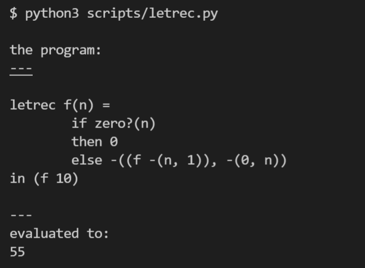

LETREC: A Language with Recursive Procedures¶
代码：letrec.py
LETREC 语言增加了递归函数，语法如下：
syntax:
Program ::= Expression
a-program(exp1)
Expression ::= Number
const-exp(num)
Expression ::= - (Expression, Expression)
diff-exp(exp1, exp2)
Expression ::= zero? (Expression)
zero?-exp(exp1)
Expression ::= if Expression then Expression else Expression
if-exp(exp1, exp2, exp3)
Expression ::= Identifier
var-exp(var)
Expression ::= let Identifier = Expression in Expression
let-exp (var, exp1, body)
Expression ::= proc (Identifier) Expression
proc-exp (var, body)
Expression ::= (rator, rand)
call-exp(rator, rand)
Expression ::= letrec Identifier (Identifier) = Expression in Expression
letrec-exp (p-name b-var p-body letrec-body)
该语言的运行效果如下
evaluate letrec表达式的时候
1 2 | if isinstance(exp, LetRecExp):
return evaluate(exp.letrec_body, LetRecEnv(exp.p_name, exp.b_var, exp.p_body, env))
|
重点在LetRecEnv，根据letrec的语义，如果apply的这个递归函数的name，那么就构造一个 procedure给它，否则用往老的env里面查。相关逻辑如下：
1 2 3 4 5 6 7 8 9 10 11 12 | class LetRecEnv(Env):
def __init__(self, p_name, b_var, p_body, saved_env: Env):
self.p_name = p_name
self.b_var = b_var
self.p_body = p_body
self.saved_env = saved_env
def apply(self, var):
if var == self.p_name:
return ProcVal(self.b_var, self.p_body, self)
else:
return self.saved_env.apply(var)
|
核心代码其实就在apply这个函数里面